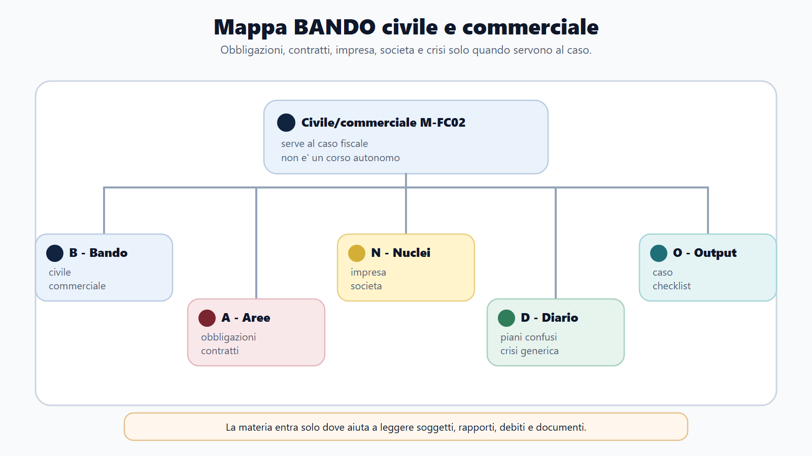
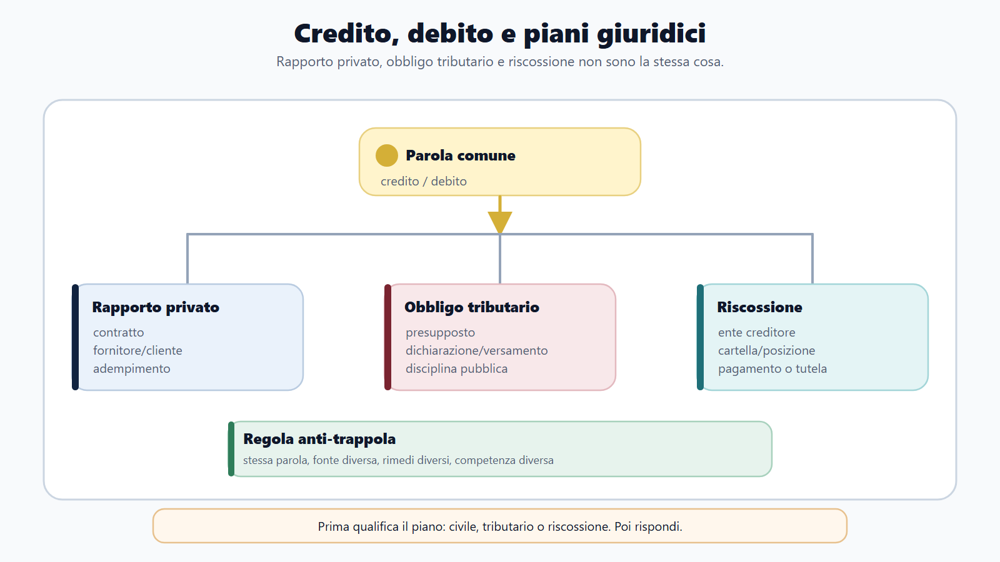
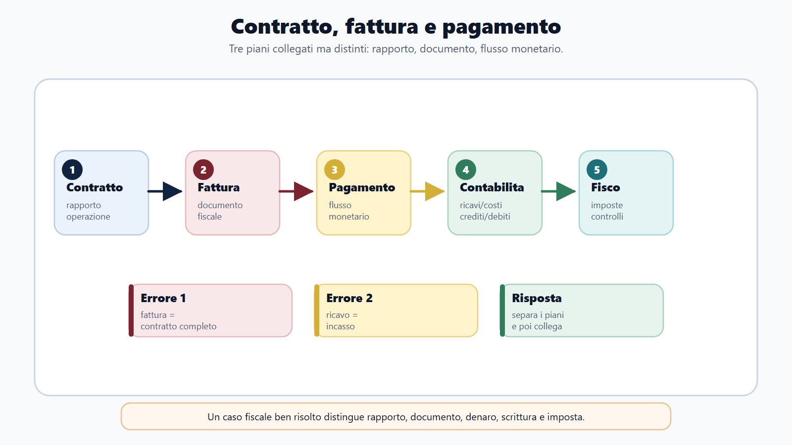
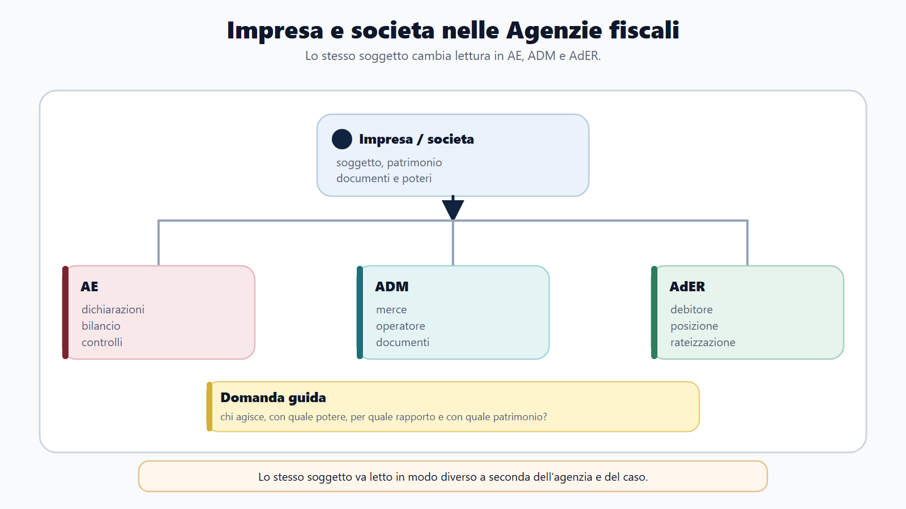

VOL-03 · Capitolo 29
M-FC02
Civile e commerciale applicati
a fisco, dogane e riscossione
Un’impresa importa componenti, li trasforma e vende il prodotto finito. Dietro l’operazione stanno contratto, obbligo di pagare, trasferimento, trasporto, garanzie, crediti e responsabilità patrimoniale. A questi rapporti si sovrappongono gli effetti fiscali, doganali e, se i debiti non vengono adempiuti, le regole della riscossione.
01 · Il problema in prova
Prima il rapporto, poi il tributo
Chi è il soggetto obbligato? Qual è la fonte del debito? Il contratto è efficace? Il credito è stato ceduto? Esiste una garanzia? Il debitore agisce personalmente oppure attraverso una società? Non serve un intero corso di diritto privato: servono gli istituti che spiegano i fatti esaminati da AE, ADM e AdER.
Che cos’è il rapporto giuridico
Una relazione tra soggetti regolata dall’ordinamento. A una situazione attiva corrisponde una situazione passiva. Il primo controllo identifica chi sia titolare: una persona agisce in proprio, per una società o per conto di un altro soggetto?
A che serve in prova
A non partire dall’effetto fiscale senza qualificare il rapporto. Prima di decidere se una somma sia ricavo, finanziamento, restituzione o risarcimento si ricostruiscono soggetti, titolo, documenti ed esecuzione concreta.
La firma materiale, da sola, non imputa l’operazione.
Capacità giuridica è l’idoneità a essere titolare di situazioni; capacità di agire riguarda il compimento valido di atti. Gli enti operano attraverso organi e rappresentanti. Attribuire il rapporto a chi firma, senza verificare i poteri, può assegnare ricavi, debiti o garanzie al soggetto sbagliato.
02 · BANDO
Cinque decisioni su questo capitolo
| Che cosa fai | Se la salti | |
|---|---|---|
| B — Bando | Cerca diritto civile, obbligazioni, contratti, responsabilità, commerciale, impresa, società, crisi. | Studi un manuale privatistico senza applicazione fiscale. |
| A — Aree | Collega privato, contabilità, tributi, dogane, riscossione, catasto e pubblicità. | Tratti il contratto come se fosse l’imposta. |
| N — Nuclei | Debitore, creditore, adempimento, mora, contratto, garanzia patrimoniale, impresa, azienda, società. | Confondi debito e responsabilità, impresa e azienda. |
| D — Diario | Nullità/annullabilità, credito/garanzia, crisi/insolvenza, cessione di quote/azienda. | Ripeti le trappole all’orale. |
| O — Output | Qualifica un’operazione, individua soggetti e garanzie, risposta orale ordinata. | Elenco di articoli senza fatti. |
03 · Mappa
Dal programma alla qualificazione del caso
La mappa collega istituti civilistici e applicazioni alle Agenzie. Serve a non saltare dal nome del contratto alla voce IVA o al carico AdER.

Soggetto, obbligazione, contratto, garanzia, impresa: poi fisco, dogane e riscossione.
04 · Obbligazione
Fonte, prestazione, adempimento
L’obbligazione vincola un debitore a una prestazione patrimoniale, possibile, lecita e determinata o determinabile. Deriva dal contratto, dal fatto illecito o da altri atti e fatti. Non ogni uscita è un pagamento né ogni entrata è una vendita: possono esistere restituzioni, finanziamenti, risarcimenti, conferimenti e anticipazioni.
Eseguire esattamente: soggetto, destinatario, oggetto, luogo e tempo. L’imputazione chiarisce quale rapporto si estingue. L’inadempimento è mancanza, tardività o inesattezza. La mora qualifica il ritardo e non coincide in ogni caso con il semplice superamento della scadenza. Penale e caparra non sono sinonimi.
Credito civilistico, rappresentazione contabile e conseguenze tributarie si ricostruiscono separatamente.

05 · Vicende
Modificazioni, estinzione, responsabilità
Nella cessione del credito cambia il creditore; il rapporto prosegue. Delegazione, espromissione e accollo intervengono sul lato passivo con strutture differenti. La compensazione civilistica non va confusa con quella tributaria. La responsabilità contrattuale nasce dalla violazione di un’obbligazione preesistente; l’extracontrattuale dalla lesione ingiusta fuori da uno specifico rapporto obbligatorio.
| Istituto | Che cosa cambia | Errore |
|---|---|---|
| Cessione del credito | Cambia il creditore. | Pensare che cambi il debitore o che il debito si estingua sempre. |
| Solidarietà passiva | Il creditore può chiedere l’intera prestazione a uno dei condebitori. | Presumerla senza fondamento. |
| Estinzione | Adempimento, compensazione, confusione, novazione, remissione, impossibilità non imputabile. | Trattare ogni bonifico come chiusura del rapporto più vicino nel tempo. |
| Due responsabilità | Struttura, prova, imputazione e prescrizione diverse. | Partire dall’etichetta del danno. |
06 · Contratto
Accordo, effetti, invalidità
Elementi essenziali: accordo, causa, oggetto e forma quando richiesta. Il contratto produce effetti tra le parti e va eseguito secondo buona fede. La forma può essere richiesta per validità, prova o pubblicità: i tre piani non coincidono. La registrazione fiscale non sana da sola un vizio civilistico. Per gli immobili restano distinti titolo, forma, trascrizione e voltura.
Rappresentanza
Effetti diretti nella sfera del rappresentato se il rappresentante agisce entro i poteri e spende il nome. Institore, procuratore e commesso non hanno la stessa posizione. Qualifica interna, procura e pubblicità non sono intercambiabili.
Scioglimento
Nullità: vizi gravi. Annullabilità: effetti finché non intervenga l’annullamento. Rescissione: alterazioni originarie. Risoluzione: problemi sopravvenuti in un contratto valido. Recesso: potere unilaterale se legge o contratto lo consentono.
07 · Operazione
Contratto, fattura, pagamento
La vendita trasferisce un diritto verso il prezzo. Somministrazione, appalto, mandato, deposito, trasporto, locazione hanno strutture diverse. Il nome scelto dalle parti non prevale automaticamente sulla struttura concreta. La qualificazione aiuta fisco e dogane, ma non sostituisce la disciplina pubblicistica.

Tre documenti o fatti collegati, non sovrapponibili. Un bonifico non si associa automaticamente alla fattura più vicina nel tempo.
08 · Garanzie
Patrimonio generico e tutele specifiche
In linea generale il debitore risponde con il proprio patrimonio. La garanzia generica non attribuisce al creditore un diritto immediato su un bene determinato. Privilegio, pegno e ipoteca attribuiscono prelazione. La fideiussione è personale: un terzo garantisce il debito altrui. Questi strumenti non coincidono con la riscossione pubblica.
| Strumento | Funzione |
|---|---|
| Pegno | Prelazione su mobili o crediti, secondo i presupposti. |
| Ipoteca | Prelazione su immobili o altri beni registrati ammessi. |
| Fideiussione | Garanzia personale del terzo. |
| Surrogatoria, revocatoria, sequestro | Reagiscono a inerzia, atti pregiudizievoli o rischio: non trasferiscono automaticamente i beni. |
09 · Impresa
Imprenditore, impresa, azienda, società
L’imprenditore esercita professionalmente un’attività economica organizzata. L’impresa è l’attività; l’azienda è il complesso dei beni organizzati. La cessione dell’azienda non coincide con la cessione delle partecipazioni. Il valore aziendale non è la semplice somma dei beni: organizzazione, clientela e capacità reddituale concorrono all’avviamento.
| Profilo | Persone | Capitali |
|---|---|---|
| Centralità | Rapporto personale tra soci | Organizzazione e capitale |
| Autonomia | Imperfetta, con regimi diversi | Perfetta in linea generale |
| Responsabilità | Può essere personale e illimitata | Di regola limitata al conferimento |
Responsabilità limitata non significa assenza di responsabilità. Il debito sociale non si trasferisce automaticamente al socio.

10 · Crisi e Agenzie
Segnali, non diagnosi automatiche
Una perdita, un ritardo o un indice negativo non equivalgono automaticamente a crisi o insolvenza. La crisi riguarda la prospettica inadeguatezza dei flussi; l’insolvenza si manifesta nell’incapacità di adempiere regolarmente. Assetti organizzativi adeguati e Codice della crisi: qui se ne ricorda la funzione generale. Procedure avanzate richiedono fonte dedicata e aggiornata al bando.
| Ente | A che servono gli istituti civilistici |
|---|---|
| AE | Qualificare vendita o finanziamento, cessione d’azienda o di beni, rapporto societario, titolarità di crediti e rappresentanza. Poi la disciplina tributaria. |
| ADM | Titolarità delle merci, vendita, trasporto, rappresentanza e garanzie. Le clausole commerciali distribuiscono costi e rischi; l’obbligazione doganale segue la normativa doganale. |
| AdER | Obbligazione, coobbligazione, successione, garanzia patrimoniale, pegno, ipoteca, fideiussione. La riscossione pubblica conserva atti, poteri e limiti propri. |
11 · Caso guidato
Importazione e tensione finanziaria
Beta Srl importa componenti, incarica un rappresentante, vende con pagamento differito e ottiene credito bancario garantito. Gli incassi rallentano e alcune scadenze non sono rispettate.
| Passaggio | Ragionamento |
|---|---|
| Soggetto | La parte è Beta Srl, non automaticamente il socio o l’amministratore che firma. Vanno verificati i poteri. |
| Rapporti | Acquisto, trasporto, vendita e finanziamento generano obbligazioni distinte. |
| Crediti | Le vendite differite producono crediti; l’incasso successivo estingue il credito senza creare una seconda vendita. |
| Garanzia | La fideiussione è personale; l’ipoteca è reale e riguarda il bene indicato. |
| Agenzie | AE verifica gli effetti fiscali, ADM applica la disciplina doganale, AdER riscuote i carichi affidati secondo regole proprie. Il ritardo è un segnale, non una diagnosi di crisi. |
12 · Verifica
Due domande da saper spiegare
Garanzia patrimoniale generica e garanzie specifiche
Il debitore risponde con il patrimonio; il creditore ordinario non ha un diritto immediato su un singolo bene. Privilegio, pegno e ipoteca; fideiussione come garanzia personale; mezzi di conservazione. Differenza rispetto alla riscossione pubblica.
Il socio di una società di capitali risponde sempre dei debiti tributari?
No. Società e socio sono posizioni distinte. La responsabilità personale deve derivare dalla disciplina applicabile e dai fatti accertati; la partecipazione non trasferisce automaticamente ogni debito sociale.
13 · Mini-esercizio
Classifica le situazioni
| Situazione | Qualificazione |
|---|---|
| Un terzo garantisce personalmente il debito dell’impresa | Fideiussione o altra garanzia personale secondo il titolo. |
| Due crediti reciproci si estinguono nei limiti corrispondenti | Compensazione civilistica, distinta da quella tributaria. |
| Il creditore reagisce a un atto che pregiudica il patrimonio | Possibile azione revocatoria, se ne ricorrono i presupposti. |
| I soci vendono tutte le quote di una Srl che conserva l’azienda | Cessione di partecipazioni, non cessione dell’azienda. |
Soci o assemblea, amministratori, rappresentanza, organi di controllo e revisore indicano ruoli diversi. Capitale sociale, patrimonio e patrimonio netto sono grandezze diverse. Il bilancio non coincide con la dichiarazione fiscale.
14 · Tipi societari
La classificazione orienta, non conclude
Società di persone: società semplice, in nome collettivo, in accomandita semplice. Società di capitali: per azioni, in accomandita per azioni, a responsabilità limitata. Nella società in accomandita contano anche la categoria del socio e il relativo regime. I conferimenti non sono ammessi o valutati allo stesso modo in ogni tipo.
Soggetto
Chi è titolare del rapporto e con quali poteri.
Fonte
Contratto, illecito, altro fatto riconosciuto.
Effetto pubblicistico
Fisco, dogana o riscossione, secondo la disciplina propria.
15 · Da tenere ferme
Cinque regole, con il perché
1. L’obbligazione lega debitore, creditore e prestazione sulla base di una fonte.
2. Adempimento, inadempimento e mora descrivono fasi diverse.
3. Il contratto va distinto dai suoi effetti fiscali, doganali e pubblicitari.
4. Impresa, azienda e società non sono sinonimi.
5. Crisi e insolvenza non derivano da un solo indice.
16 · Solidarietà e parziarietà
Più debitori, un fondamento
Nella solidarietà passiva il creditore può chiedere l’intera prestazione a uno dei condebitori, ferma la regolazione interna. Nella parziarietà ciascuno risponde della propria quota. L’applicazione della solidarietà richiede sempre un fondamento. Nei casi fiscali e di riscossione la coobbligazione va letta nella disciplina specifica, non per analogia affrettata.
Quiz rapido
Nella cessione del credito cambia il creditore. La fideiussione è garanzia personale. L’azienda è il complesso organizzato per l’impresa, non l’imprenditore e non il patrimonio netto.
Errore tipico
Partire dall’effetto fiscale senza qualificare il rapporto. Prima soggetti, titolo, documenti ed esecuzione concreta; poi IVA, redditi, dogana o carico.
Prossimo capitolo
Casi pratici, quiz e orale nelle Agenzie fiscali
Il lessico civilistico è in ordine. Il capitolo successivo trasforma lo studio in prestazione: quiz in quattro mosse, griglia dei casi, risposta orale da 90 secondi, diario e piano 30/60/90.